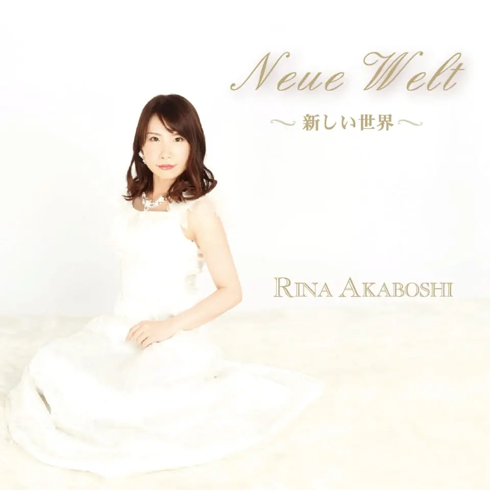

最新情報
Updates
"2023.09.18"
(Mon)
クラシック愛好家のためのオンラインコミュニティ“おといのちオンライン”開設のお知らせ
"2023.08.01"
(Tue)
みんなの挑戦をあたたかく見守る場所“おといのち音楽会”開催決定
演奏動画
Movies
ベートーヴェン : ピアノソナタ第26番「告別」op.81a
プロフィール
Biography
赤星 里奈
Rina Akaboshi
クラシック音楽を専門とするピアニスト。
特にドイツ音楽に造詣が深いが、近年ではフランス音楽やロシア音楽にも研究心を持ち、レパートリーと表現の幅を拡げている。
円熟した表現と音楽性を深く追求した演奏に定評があり、響きの新しい可能性を探求するために奏法を研究し続けている。
2018 年に初のソロアルバム
「Neue Welt ～新しい世界～」をリリース。
現在は自身の演奏に関する研究活動や後進の育成とともに、クラシック音楽界に貢献すべく活動の幅を広げている。
コンサート
Concerts
2021.06.19
YouTube / イマチケ
赤星 里奈 ピアノリサイタル vol.1 presented by
"MUSICUM"
メディア
Media
ベートーヴェン : ピアノソナタ第26番「告別」op.81a
シューマン＝リスト : 献呈
ショパン : 練習曲集op.10よりNo.5「黒鍵」
シューベルト：即興曲 第3番 D899 op.90-3 変ト長調
CD
Recordings

Neue Welt 〜新しい世界〜
2018年1月11日 リリース
¥ 3,300 (税込) + 送料
ドイツで録音された珠玉のCD。
ドイツの空気の中に響く美しい音色を是非お楽しみください。
収録曲
"録音: 2017年4月27日
Barocksaal Rostock, Deutschland "
-
J.S.バッハ
平均律クラヴィーア曲集第Ⅱ巻より 第9番 ホ長調 BWV878 -
L.v.ベートーヴェン
ピアノソナタ第30番 ホ長調 作品109 -
F.シューベルト
ピアノソナタ第18番 ト長調 "幻想" D894
"録音: 2017年4月27日
Barocksaal Rostock, Deutschland "
お問い合わせ
contact
ピアニスト 赤星里奈へのご依頼・お問い合わせなどは、
こちらからお願い致します。
こちらからお願い致します。